Agent korak 1 od 6
slot.mdv1.md
Agent piše prompt
Pravi slot za sliku koja mu je potrebna, sa promptom i podešavanjima. Ti taj slot vidiš kao karticu.
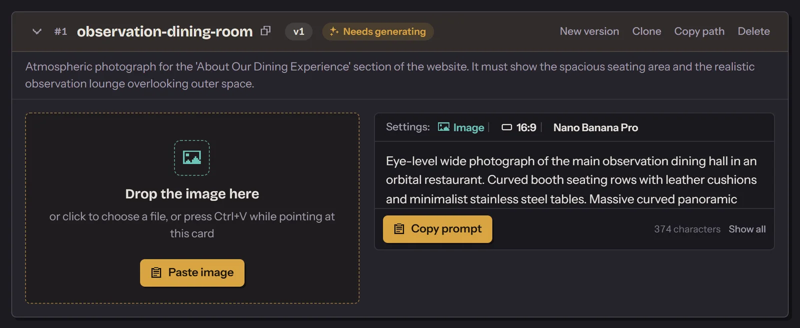
Tvoj agent
Asset Prompter je mala lokalna aplikacija koja prenosi promptove i rezultate između tvog agenta za programiranje i generatora slika ili videa koji koristiš ručno.
Install Asset Prompter for me: follow https://github.com/Djordje1998/asset-prompter/blob/master/AGENT-INSTALL.md
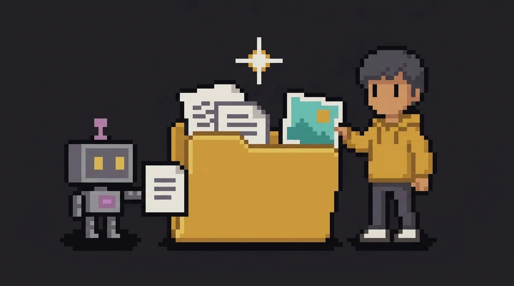
Tvoj generator
Logotipi i nazivi pripadaju svojim vlasnicima. Asset Prompter je nezavisan projekat: nije povezan ni sa jednim od njih, niti ga iko od njih podržava.
Agentovi koraci su ljubičasti, a tvoji boje senfa. Koraci 4 i 5 nisu obavezni: odobri posle koraka 3 i slika je gotova.
Agent korak 1 od 6
slot.mdv1.md
Pravi slot za sliku koja mu je potrebna, sa promptom i podešavanjima. Ti taj slot vidiš kao karticu.

Ti korak 2 od 6
Pritisni „Copy prompt”, nalepi prompt u Google Flow ili bilo koji drugi generator, pa tamo pritisni „Generate”.
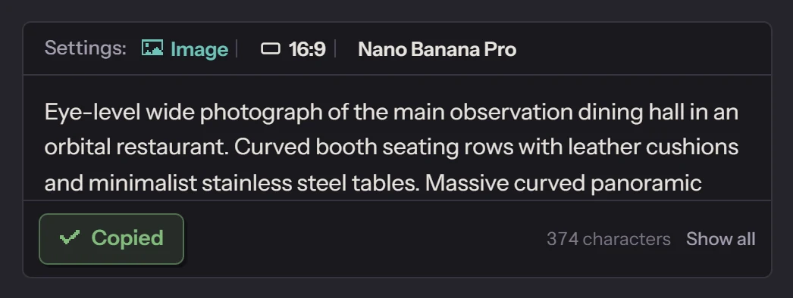
Ti korak 3 od 6
v1/1.png
Prevuci je na karticu ili pritisni Ctrl+V. Ako je već dobra, odmah je odobri i pređi na korak 6.
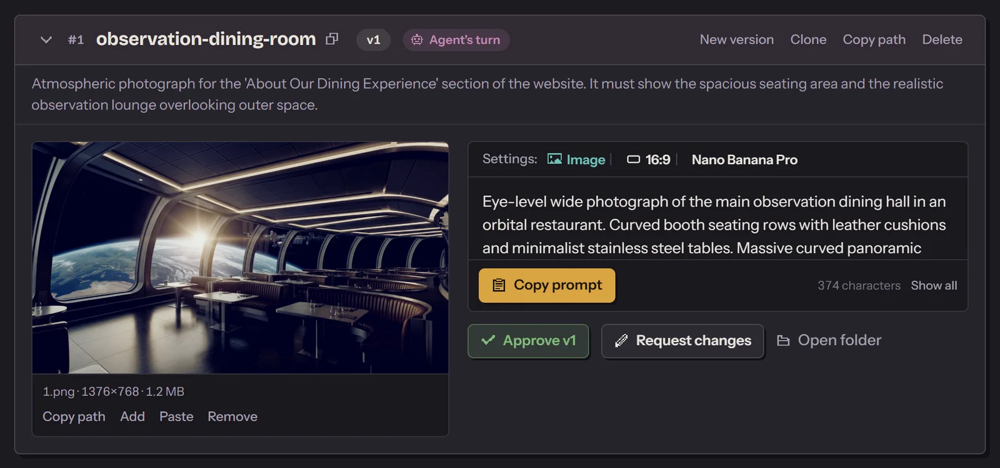
Ti korak 4 od 6
OpcionoPritisni „Notify agent”. Agent otvara tvoju sliku i proverava da li odgovara onome što je tražio.
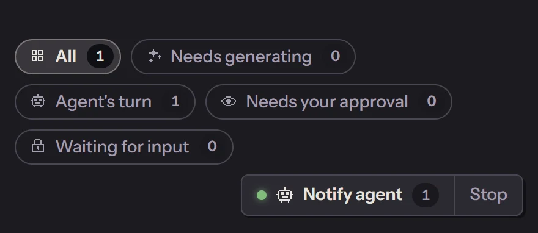
Ti ili agent korak 5 od 6
Opcionov1.feedback.mdv2.md
Napiši šta treba promeniti, ili agent kaže šta ne valja. On piše sledeći prompt, a ti generišeš ponovo.
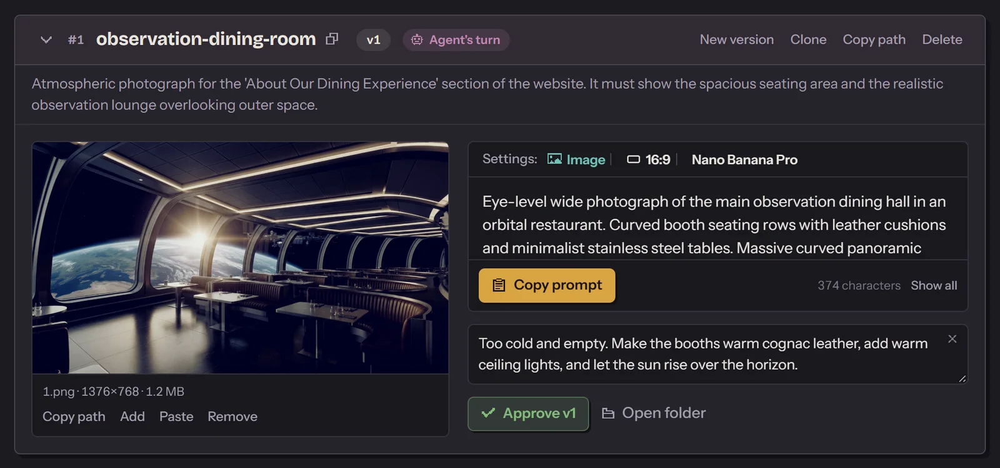
Ti korak 6 od 6
APPROVEDfinal.png
Jednim klikom slika postaje konačna. Agent dobija poruku da je slika koju je tražio spremna i koji fajl da koristi.
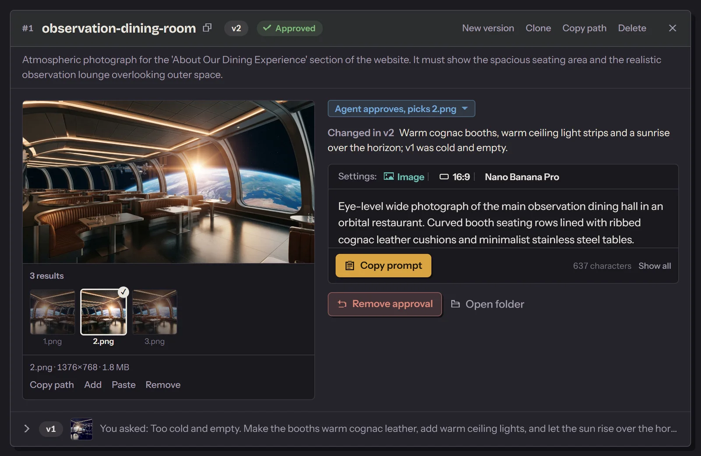
Menja se samo drugi kraj. Tamo generišu serveri provajdera, ili ti.
MCP serverkada ga generator ima
Tikada ga nema
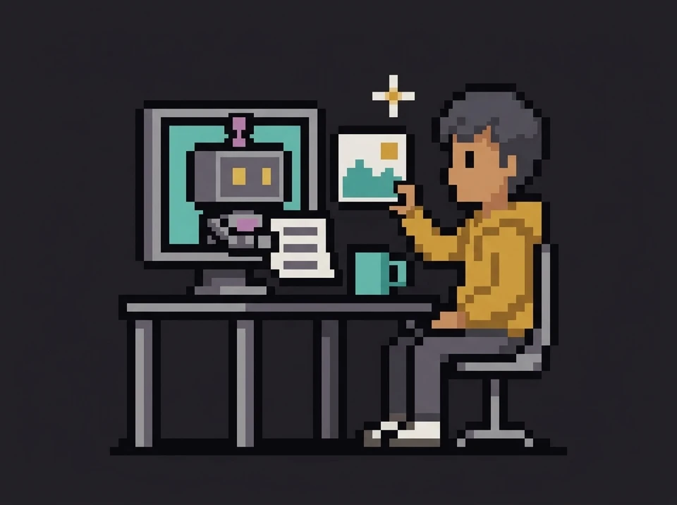
Nazivi proizvoda pripadaju svojim vlasnicima. Asset Prompter je nezavisan projekat: nije povezan ni sa jednim od njih, niti ga iko od njih podržava. Pretplate i API-ji provereni su 2. oktobra 2026.
Tvoj agent zna koje su mu slike potrebne, ali one nastaju u generatoru koji koristiš ručno. Zato sve prenosiš ti.
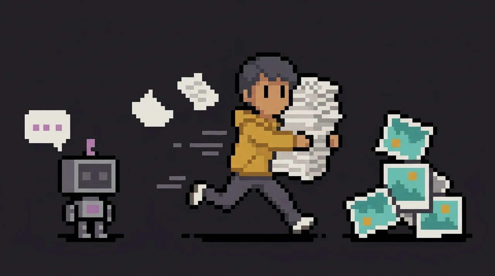
Sve što generišeš stiže tamo gde agent može da pogleda.
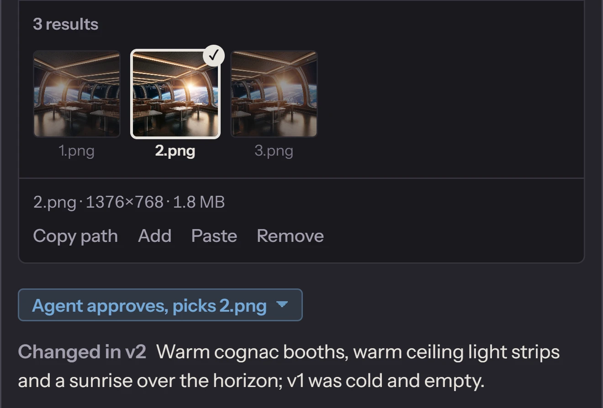
Nova verzija nikada ne zamenjuje staru. Svaki rezultat, tvoj zahtev za izmenu i agentov pregled ostaju u folderu slota, gde agent može da ih pročita.
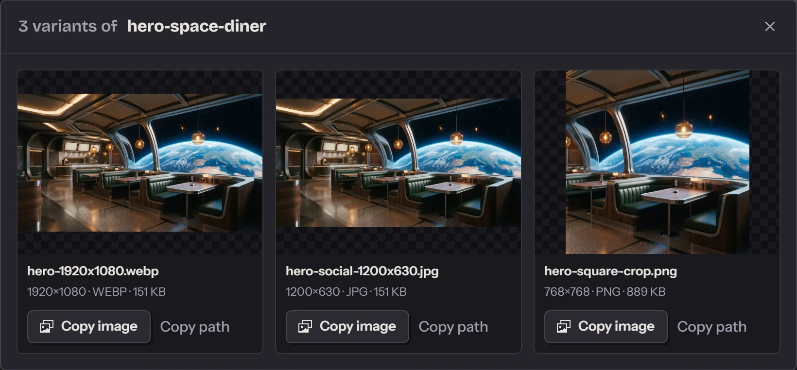
Isečci, druge dimenzije, drugi formati i sitne izmene, napravljeni od odobrenog fajla. Bez novog generisanja.
Stoje na jednom mestu, uz konačnu sliku. U aplikaciji ih otvaraš sa njene pločice i svaku kopiraš jednim klikom.
Agent ne može da gleda video. Zato aplikacija svaki klip koji ubaciš pretvara u slike i brojeve koje agent može da pročita.
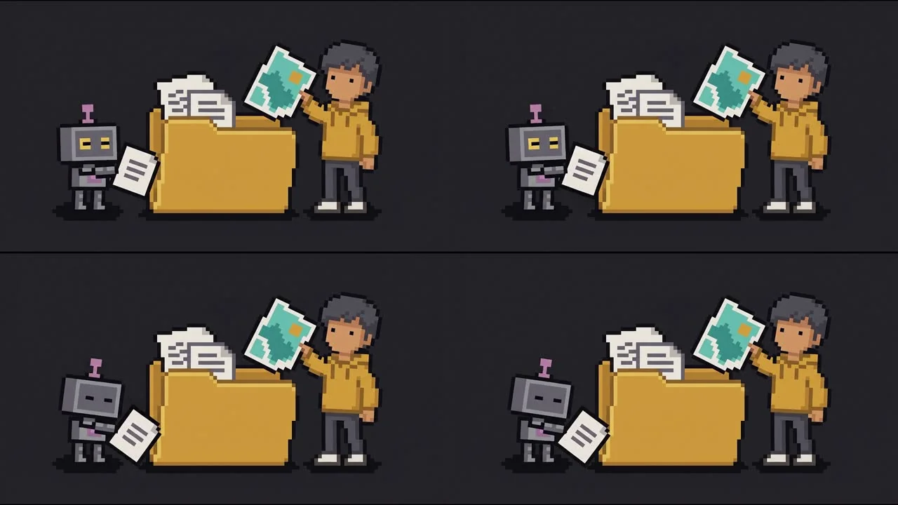
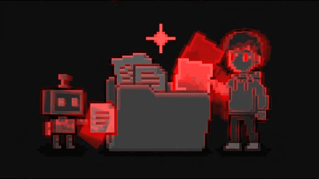
Naslovni baneri, fotografije za sekcije, pozadine. Agent zna gde koja ide i šta tamo treba da postigne, i to upisuje u slot.
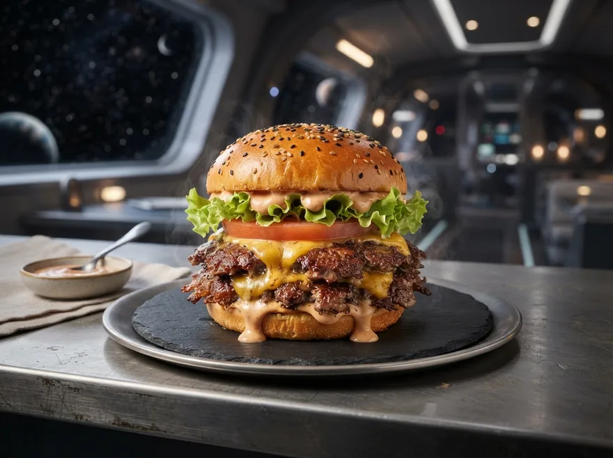
Prvo odobri glavnu sliku, a kasniji slotovi je uzimaju kao referencu. Slot koji zavisi od drugog čeka dok taj drugi ne bude odobren.
Video slot može da uzme odobrenu sliku kao početni frejm. Agent zatim proverava pokret sekundu po sekundu, kao i to da li klip može da se vrti u petlji.
Ikone, prazna stanja, ilustracije. Kad neku odobriš, agent iz tog fajla izvozi veličine i formate koji mu trebaju.
Folder projekta
Cela scena iz jednog zadatka, sa istim likovima od prvog do poslednjeg frejma.
Ti pritiskaš „Generate” u svom alatu, svaki put. Za serije koje se izvršavaju dok nisi tu, izaberi generator koji ima API ili MCP server.
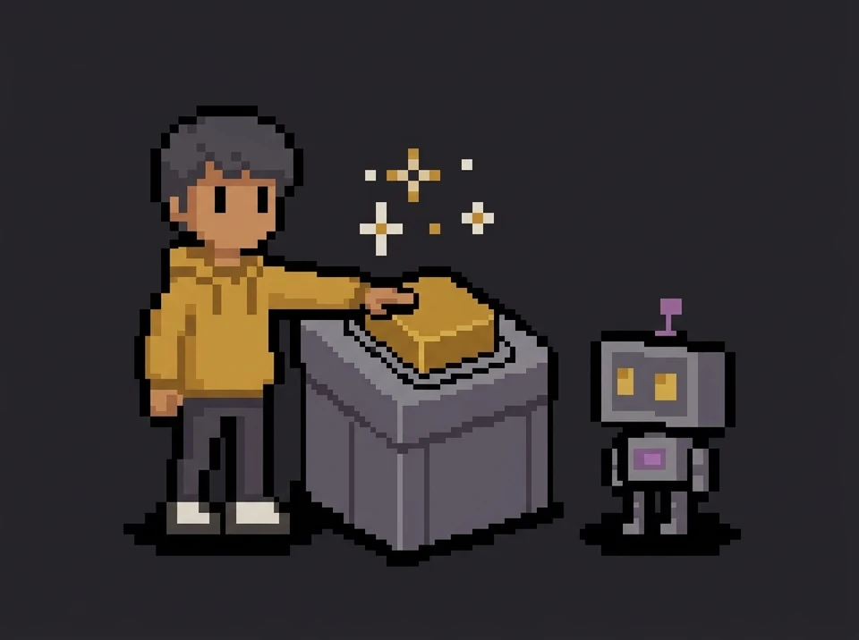
U oba slučaja, ništa ne moraš da imaš unapred instalirano.
Radi tvoj agent
Daj je agentu za programiranje koji može da izvršava komande, kao što je Claude Code.
Install Asset Prompter for me: follow https://github.com/Djordje1998/asset-prompter/blob/master/AGENT-INSTALL.md
Radiš ti
Preuzmi ZIP i raspakuj ga bilo gde, ili kloniraj repozitorijum.
Preuzmi ZIPNa Windowsu dvaput klikni na setup.bat. Na Linuxu u tom folderu pokreni sh setup.sh. Setup instalira Bun, ffmpeg i pakete aplikacije, dodaje ikonu Asset Promptera i otvara aplikaciju.
Zatim, u aplikaciji: otvori projekat, pritisni „Copy agent instructions” i nalepi to u čet sa svojim agentom. Pri prvom pokretanju otvara se dvominutni tutorijal.
Sa svakim agentom koji može da čita i piše fajlove u folderu projekta i da prati pisano uputstvo. To uputstvo, HOW-TO-USE.md, aplikacija upisuje u svaki projekat. Ako agent ume i da pokrene komandu u pozadini i da se probudi kada se ona završi, budi ga „Notify agent”. Ako ne ume, u četu mu napišeš „gotovo”.
Sa svakim alatom u koji možeš da nalepiš prompt i iz kog dobijaš fajl. Preset govori agentu koje modele, režime, odnose stranica i trajanja alat nudi, a aplikacija te upozorava kada se rezultat ne poklapa. Uključeni su preseti za ChatGPT Images, Dreaminu, Google Flow, Grok Imagine, Leonardo.Ai, Lumu i Midjourney, a svaki slot može da koristi bilo koji od njih, pa jedan projekat može da kombinuje alate. Svaki preset je kratak tekstualni fajl koji možeš da kopiraš i prilagodiš drugom alatu.
Možda i ne. Nekoliko generatora sada nudi zvanični MCP server preko kog agent može da generiše u okviru tvoje pretplate, među njima Higgsfield, Ideogram, Krea i Runway. Asset Prompter i tu pomaže ako želiš da svaki rezultat lično biraš i odobravaš i da svaku verziju čuvaš u folderu, ili ako koristiš mogućnosti koje alat zadržava samo za svoju aplikaciju.
Nije. Preko „New slot” promptove možeš da pišeš i bez agenta. I dalje dobijaš verzije, rezultate jedne pored drugih i policu sa odobrenim fajlovima.
Aplikacija sluša samo na 127.0.0.1, ne traži nalog i sve čuva u folderu tvog projekta. Dve stvari ipak izlaze: interfejs učitava fontove sa servisa Google Fonts, a sve što nalepiš u generator odlazi tom generatoru.
Ništa. Plaćaš svoj generator i svog agenta, kao i do sada.
Da. Ukloni odobrenje u „Details” da ponovo otvoriš slot, ili kloniraj slot da probaš drugi pravac, a original sačuvaš.
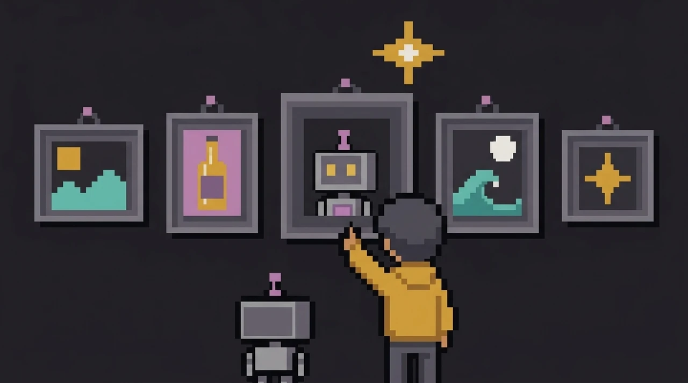
Preuzmi folder, pokreni setup, nalepi jednu poruku.